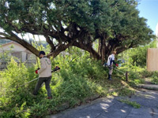
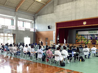

PTA活動 一覧

中高合同PTA美化作業
本校伝統行事の生徒たちの「おそうじ大会」の今年度復活に続け!!とばかりにPTAの大々的な美化作業も久しぶりの復活です。
9:00～11:00の2時間集中して作業を行いました。
高校総体激励式＆PTA激励カレー
高校総体に向けて、生徒会主催の激励式が行われ、PTAの保護者の皆さんによる激励カレーもふるまわれました。
おいしいカレーをいただき、高校総体に向けて士気が高まった一日でした。

PTA総会＆授業参観
5月11日(土)、ＰＴＡ総会＆授業参観を行いました。多くの保護者の皆様に足を運んでいただきありがとうございました。 今後も本校の教育活動へのご協力をよろしくお願いいたします。
PTA役員及びPTA評議員の募集について
与勝高等学校PTAでは令和2年度PTA役員及び評議員を募集しています。
希望される方は4月24日12時（正午）までに与勝高等学校PTA事務担当者宛てお電話ください。